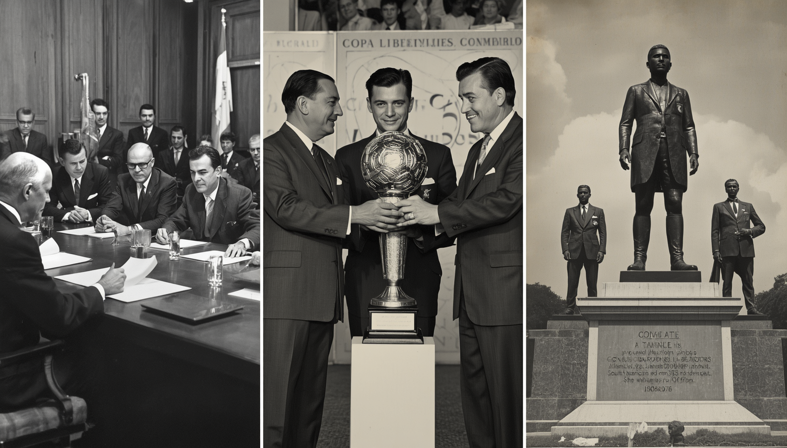

A Origem da Glória Eterna: Como Tudo Começou
A Copa Libertadores da América nasceu do desejo de consagrar o verdadeiro campeão de futebol do continente sul-americano. Inspirada pela criação da Champions League na Europa, a Conmebol organizou a primeira edição do torneio em 1960. O nome da competição foi escolhido como uma homenagem direta aos líderes da independência das nações da América do Sul, como Simón Bolívar e José de San Martín — os "Libertadores". Naquela primeira edição, apenas sete equipes participaram, representando seus respectivos países como campeões nacionais. O primeiro jogo da história do torneio aconteceu no dia 19 de abril de 1960, onde o Peñarol, do Uruguai, goleou o Jorge Wilstermann, da Bolívia, por 7 a 1. O clube uruguaio acabou se tornando também o primeiro campeão da competição, superando o Olimpia, do Paraguai, na grande final. Desde então, o torneio cresceu em prestígio, tamanho e relevância global.
